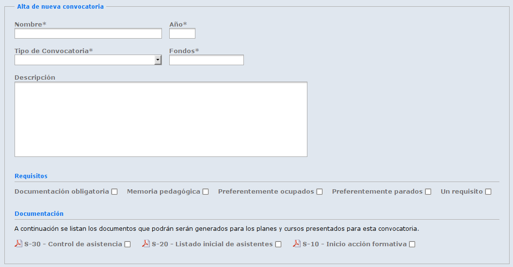

No hay ningún cambio respecto al alta.
Como se puede comprobar, en la parte inferior de la ficha se muestran los planes de la convocatoria y la documentación que se generará de la misma.
El icono que aparece junto al plan nos indica uno de los 3 estados posibles: Activo(verde), Denegado(rojo) o Pendiente(amarillo). El nombre es un enlace a la ficha del plan.
Los nombres de los documentos que aparecen aquí son enlaces a las plantillas que se utilizarán para generar la documentación.